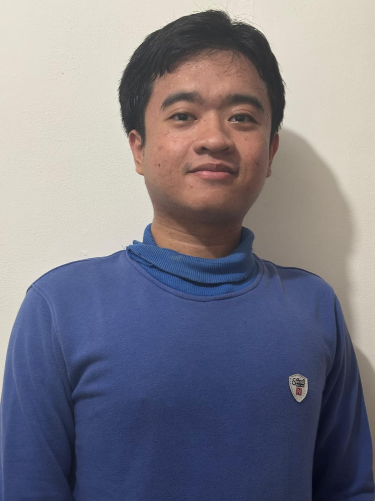

Hello, I'm
I build the systems that power products at scale — from fintech APIs and microservices at BRI and Koinworks to accounting infrastructure at Mekari. 5+ years shipping reliable, high-throughput backend in Go and Python.
Years Experience
Companies
Response Time Cut

I'm a Backend Engineer with 5+ years of hands-on experience across fintech, ERP, and financial infrastructure — currently building accounting software at Mekari Jurnal.
My work spans Go microservices, distributed systems, and cloud infrastructure. I've migrated monoliths to microservices, cut API latency by 20%, integrated government APIs for loan risk mitigation at BRI, and built serverless platforms on AWS Lambda — all while keeping test coverage above 90%.
I care about clean architecture, observable systems, and writing code that the next engineer can actually maintain. Outside work I'm drawn to distributed systems, AI engineering, and platform engineering.
Scalable distributed backend systems
System optimization & bottleneck reduction
AWS, Kubernetes, Docker, CI/CD
PostgreSQL, Redis, Kafka, MongoDB
Mekari (Mekari Jurnal)
Fulltime · Hybrid
Sapphire Skyscraper (Pinjamin App)
Fulltime · Onsite
PT Bank Rakyat Indonesia (Briguna App)
Contract · Hybrid
Kopwar (Gem Job Portal App)
Contract · Remote
Koinworks (Koinneo App)
Fulltime · Remote
Hashmicro Solusi Indonesia
Freelance · Remote
Multipolar Technology Indonesia
Fulltime · Remote
Andalas University
Studied fundamentals of computer engineering, networks, software development, and embedded systems.
Bangkit Academy — Led by Google, Tokopedia, Gojek & Traveloka
Intensive program covering machine learning, deep learning, and AI application development.
Mekari — Current Role
Cloud-based accounting software used by thousands of Indonesian SMEs. Contributes new features across the accounting module — including journal entries, invoicing, and financial reporting — while optimizing MySQL schemas and maintaining high test coverage across all changes.
PT Bank Rakyat Indonesia
Migrated a monolithic lending system to microservices architecture. Integrated government APIs (Dukcapil) for automated loan eligibility checks, reducing non-performing loan risk. Cut API response time by 20% with Redis caching and batch query processing.
Personal Project
Decentralized application for digital document signing. Users request signatures, sign digitally, and every transaction is recorded on-chain — making tampering cryptographically impossible. Built with a Go backend and React Native mobile client.
Kopwar
Full backend for a job-seeker platform built from scratch. Designed PostgreSQL schemas, built 3 independent Go microservices, and deployed fully serverless on AWS Lambda. Integrated AWS SES for transactional email and SMS notifications.
Multipolar Technology Indonesia
Routing microservice for transforming and delivering ISO20022 financial messages — the international standard used by SWIFT and central banks. Built with Go and Kafka for high-throughput, fault-tolerant message processing.
Open to new opportunities, collaborations, or just a friendly chat about backend engineering.